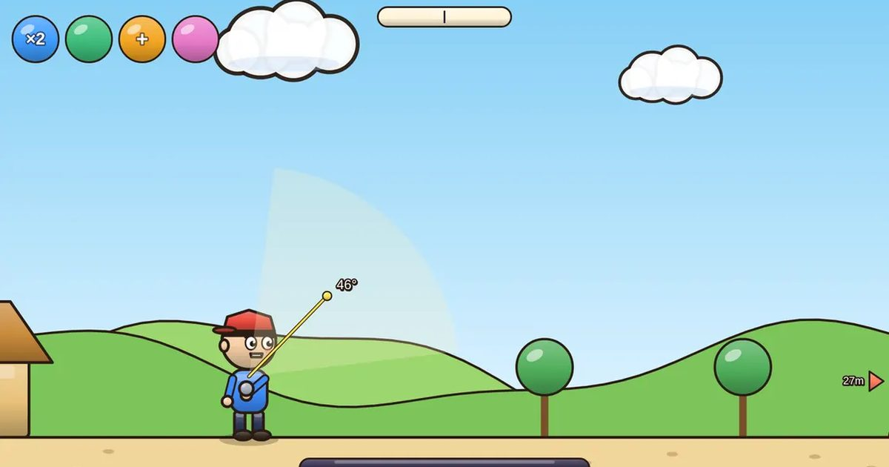

돌팔매 대결
Pebble Duel
턴제 · 1P/2P무료설치 없음폰 · PC
▶ 지금 바로 하기로그인 없이 브라우저에서 바로 시작돼요
어떤 게임인가요?
각도를 잡고 꾹 눌러 힘을 모아 던지세요. 바람을 읽고, 찬스 4가지로 역전! 둘이서 폰 하나로도 대결.
목표 · 번갈아 던져서 상대 체력을 먼저 0으로 만들면 승리. CPU를 이기면 연승이 쌓여요.
이렇게도 찾아요
돌 던지기턴제 게임던지기 대결throwing gameturn based throwartillery duel
#턴제게임 #던지기게임 #2인용게임
게임 방법
- 화면을 누르고 있으면 힘이 차올라요. 누른 채 손가락을 움직이면 그 방향으로 각도가 바뀌고, 떼는 순간 던집니다.
- 바람이 돌을 밀어요. 맞바람이면 더 세게, 뒷바람이면 약하게. 보라 표시는 지난번 힘과 각도예요.
- 머리에 맞으면 1.4배. 바닥에 떨어져도 가까우면 살짝 스쳐서 피해가 들어가요.
- 가운데 언덕이 있는 판은 높게 던져서 넘기세요.
등장하는 것들
- ×2 두 번 던지기 · 이번 턴에 한 번 더
- 왕돌 · 피해 1.6배, 크기도 큼
- 반창고 · 체력 25 회복
- 고양이 던지기 · 튕기며 넓게 피해
이런 게임도 있어요
 단짝 줄넘기협동 · 혼자 두 손 / 둘이서
단짝 줄넘기협동 · 혼자 두 손 / 둘이서 색감 테스트관찰 · 측정 · 1분
색감 테스트관찰 · 측정 · 1분 코너킹 드리프트원버튼 · 운전
코너킹 드리프트원버튼 · 운전 폴짝 개구리길 건너기 · 고전
폴짝 개구리길 건너기 · 고전 링 파이터3D 격투 · 1P/2P
링 파이터3D 격투 · 1P/2P 승부차기축구 · 연속 기록
승부차기축구 · 연속 기록